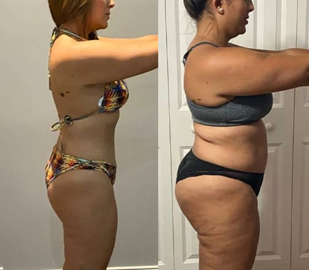
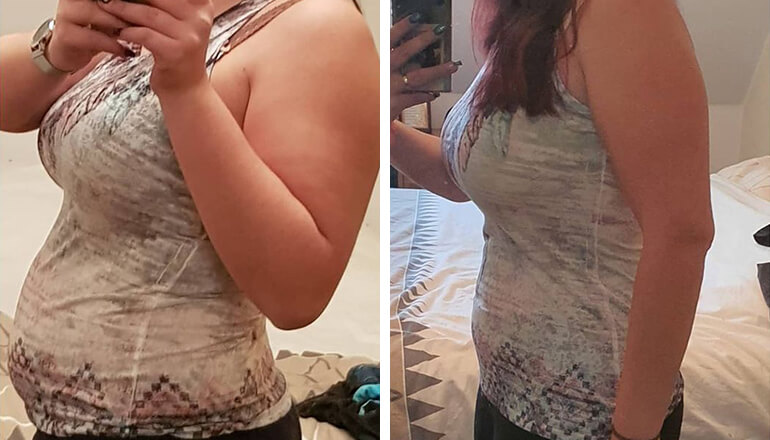
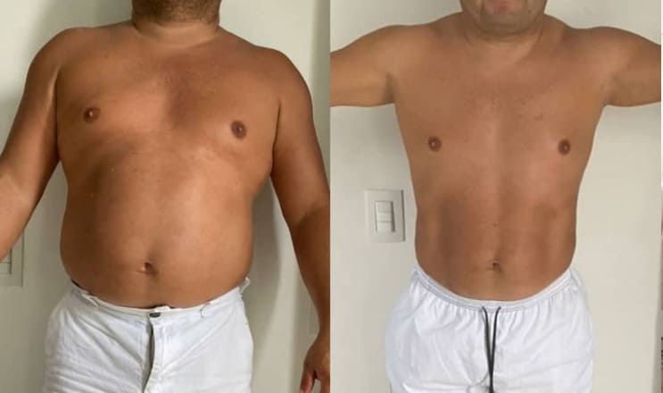

Dietas peligrosas: La ciencia del ayuno intermitente
El ayuno intermitente es una dieta que te permite comer cualquier cosa durante ocho horas al día. Esta dieta se hizo muy popular y se pensó que ayudaba a mejorar el metabolismo y a prevenir las enfermedades cardiovasculares. Sin embargo, se desmintió su eficacia. Los científicos explican por qué el ayuno intermitente es peligroso y cómo se puede perder peso sin hacer dieta ni entrenar.
Fecha:
Autor:
Amanda Pérez , Ph.D., antigüedad 38 años
Etiquetas:
El mecanismo de la dieta se basa en el hecho de que durante un determinado periodo la persona no podrá consumir muchas calorías, mientras que podrá comer lo que quiera. Aquí empieza a actuar el factor psicológico, que la gente empieza a abusar de la comida basura y el cuerpo no repone el equilibrio vital de vitaminas y minerales. Esto no ayuda a perder peso, al contrario, empiezan a surgir problemas de salud y hormonales.
El ayuno intermitente está contraindicado en las enfermedades crónicas, los trastornos alimentarios y los problemas gastrointestinales. El último estudio ha demostrado que la ingesta cíclica de alimentos, incluso en personas sanas, provoca colestasis o estasis biliar y el desarrollo de hipoglucemia. Por tanto, la dieta debe seleccionarse individualmente, y la dieta debe calcularse teniendo en cuenta la desintoxicación del organismo y los oligoelementos beneficiosos.

Los científicos llevaron a cabo un experimento. Se dividió a 120 personas con sobrepeso en dos grupos. El primer grupo practicó el ayuno intermitente. El segundo grupo comió sin ninguna restricción, pero antes de cada comida bebió un suplemento dietético especial .
El experimento duró 4 semanas. Durante este tiempo, los que siguieron el ayuno intermitente perdieron una media de 440 gramos. Las personas que comieron comida normal pero tomaron perdieron una media de 1.180 gramos. Los que hicieron el ayuno intermitente perdieron masa muscular en lugar de masa grasosa.
La cantidad de masa muscular retenida es un indicador importante. De su cantidad depende el estado de desarrollo de las enfermedades, el metabolismo y la rapidez con la que se recupera el peso excesivo tras la pérdida de peso.
La composición de la bebida es equilibrada. Combina ingredientes que no sólo limpian el organismo, sino que también descomponen las células grasas, aceleran el metabolismo, disminuyen el apetito y reponen las deficiencias vitamínicas del cuerpo. Gracias a su alta concentración de antioxidantes, acelera el metabolismo y el metabolismo carbohidrato-grasa. La pérdida de peso se debe a la descomposición de la grasa, sin pérdida de masa muscular ni de tono de la piel. El producto contiene un balance óptimo de micronutrientes. Previene las deficiencias nutricionales. Una porción te mantiene saciado durante horas.
Los científicos han demostrado que el ayuno intermitente es la próxima dieta de moda. Para perder peso con un régimen cíclico sin problemas de salud, necesitas una dieta profesional individual que tenga en cuenta los exámenes médicos.
Conclusión: es actualmente el mejor sistema de pérdida de peso para aquellos que quieren no sólo perder peso, sino también tensar su cuerpo. El producto funciona independientemente de tu estilo de vida y descompone los depósitos de grasa incluso cuando estás descansando. Además, los componentes del producto aumentan la producción de enzimas que bloquean la absorción de carbohidratos, lo que te protege de volver a ganar peso.
- 
- 
- 
Al final, queremos señalar que, sea cual sea el método de adelgazamiento que elijas, lo más importante es que no perjudique tu salud. Si decides probar , hay una buena noticia para ti: se puede comprar directamente al fabricante con un 50% de descuento.
Cristina Ortiz
¡Confirmo que el ayuno intermitente es malo! Yo destruí totalmente mi estómago con él, ahora me estoy recuperando.
Patricia García
Estuve perdiendo peso durante un mes con la ayuda de Poco a poco, el apetito disminuyó. Empecé a comer en pequeñas porciones. Aunque no me puse a dieta, sólo me limité a comer dulces y alimentos con almidón. Como resultado, perdí 9 kg. ¡Los costados han desaparecido y el estómago se ha endurecido! Y ya está bien mi complexión ❤️🔥
Celia Ortiz
Llevo toda mi vida luchando contra el sobrepeso, no puedo ni comer una manzana de más. Pedí este producto para mí. La primera semana estaba un poco desesperada porque el peso no se había movido ni 100 gramos. Mi amiga perdió 4 kg en la primera semana. Menos mal que no dejé de tomar , porque al final de la segunda semana empecé a perder peso. Los vaqueros me quedaron tan grandes que se me caían. Cada semana me abrochaba el cinturón con un agujero menos. Y lo mejor de todo es que no tuve que ir al gimnasio para hacerlo.
Hilda Molina
Gracias por tu sinceridad. Tengo un problema similar. No me decidía a hacer el pedido, pero después de tu comentario, conseguí inmediatamente 4 paquetes.
Sonia Juárez
Recientemente leí un artículo sobre una chica anoréxica de 20 kilos. Es mejor estar gorda, sinceramente. Comer para vivir, no vivir para comer.
Melisa Conde
Muy buen artículo, al fin me di cuenta de lo que estaba haciendo mal. Probaré estas cosas porque realmente me siento muy mal con el ayuno intermitente.
Angela Campos
Llevo una dieta equilibrada, casi sin restricciones, como lo que quiero, pero poco a poco. Y si hay que corregir el peso, entonces junto con esta dieta tomo un tratamiento de , que elimina unos cuantos kg en un mes y vuelvo a mi dieta habitual. Y eso es todo. Es realmente fácil y sencillo. Y he tirado todas las dietas por el retrete, aunque antes de tomar estas cosas, las tomaba constantemente, y pesaba alrededor de 100 kg.
Benito Pascua
El ayuno intermitente provocó el ingreso de mi madre en el hospital con una forma grave de gastritis. Ella comía lo que quería el 8/16. Como resultado, prácticamente dejó de comer comida sana, al menos en la época en que podía como controlarse. Y luego me dijeron que podía hacer lo que quisiera, así que sólo consumí carbohidratos. ¡Así que no se te ocurra hacer dieta sin un nutricionista!
Daniela Romero
Lo confirmo. Las dietas no dan buenos resultados.
Carmen Fernández
Estoy observando que con todo el mundo está loco. Perdí mucho peso hace 2 años, entonces este producto ni siquiera era tan famoso. Bueno, yo también voy a presumir de mis resultados. Perdí 55 kg y aún me mantengo, aunque como lo que me apetece.